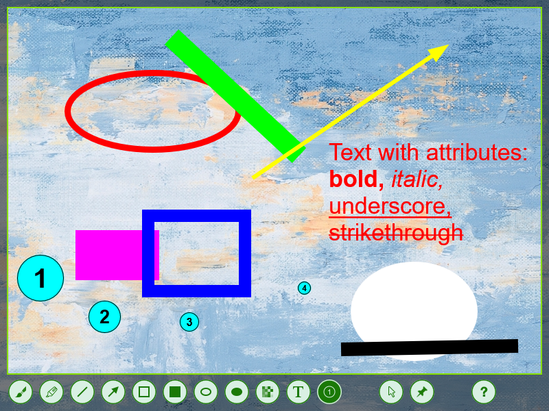

greenflame.SCREEN CAPTURE
greenflame.SCREEN CAPTUREWINDOWS / 01
LESS EXPLAINING. MORE SHOWING.
A small tool.
A sharper
message.
Capture what matters.
Mark it up. Make your point.

01 / frame it. A region, a window, or your desktop.
02 / make it clear. Arrows, text, highlights, and shapes.
03 / carry on. Copy, save, or pin it on screen.
Get the shot.
Get on with it.
A precise screenshot tool that lives in your tray.
Ready when you press Print Screen.
greenflame / annotationActual app screenshot
Capture Region · window · desktopClarify Draw · highlight · labelDeliver Copy · save · pin
Keep the point.
A screenshot. A few marks.
Everything you meant.
A NOTE ON COMMUNICATION